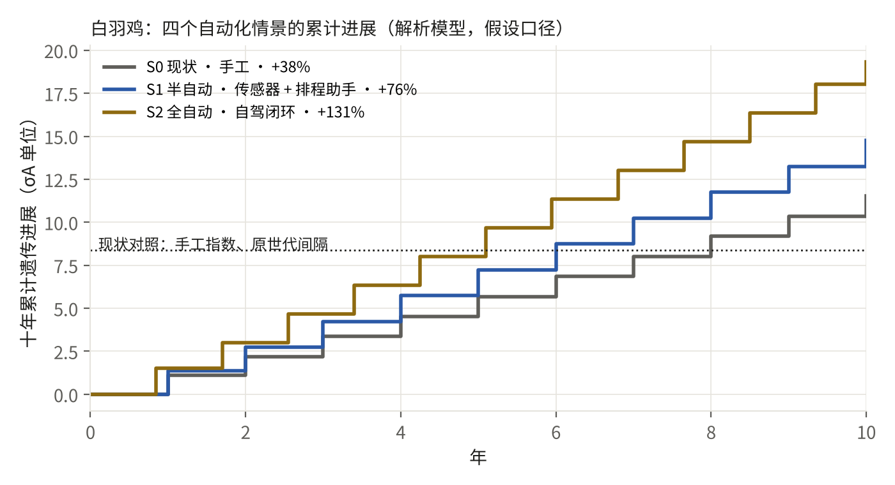
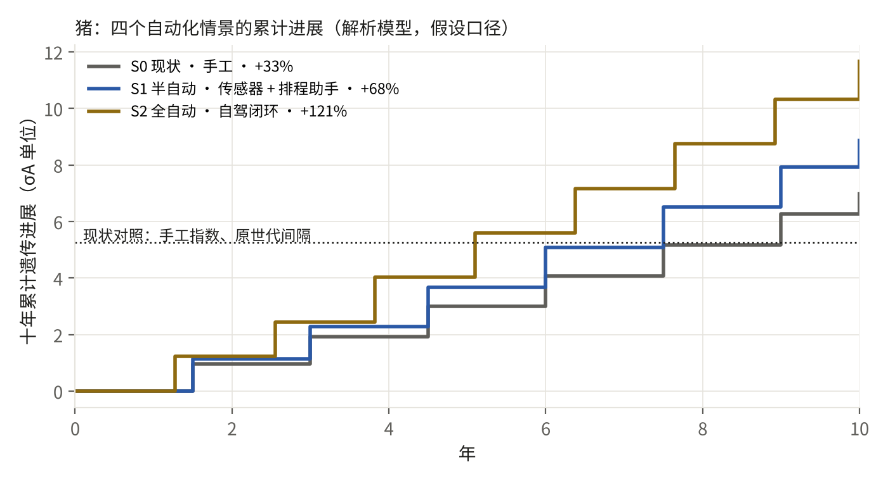
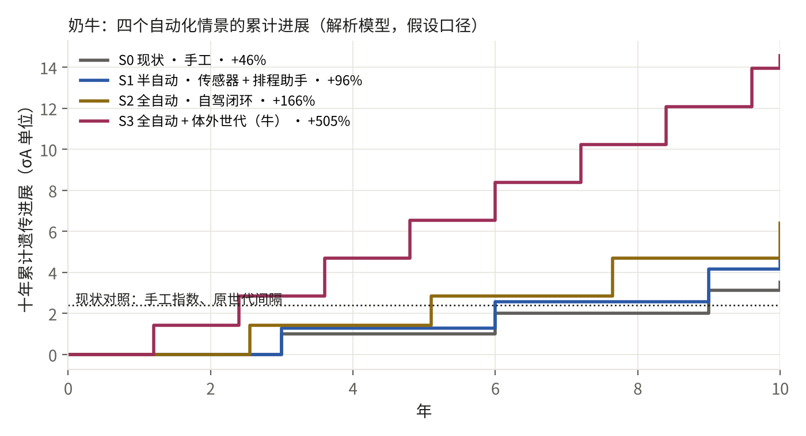
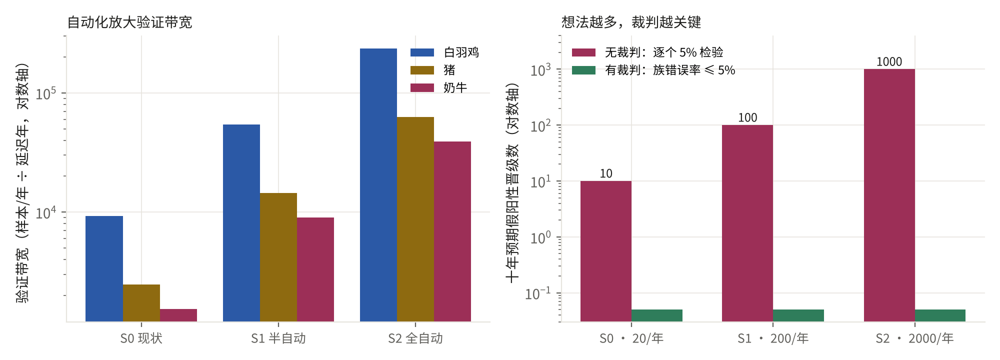

问题：如果湿实验——基因分型实验室、表型采集、繁殖执行——也自动化，育种闭环能快多少？答案用育种者方程和验证带宽算，不用形容词。生成时间 2026-09-28 15:11 UTC。全部参数是假设口径（见 THEORY.md），不是任何客户的预测。
| 情景 | 是什么 |
|---|---|
| S0 现状 · 手工 | 建议靠邮件和表格传递，四成被执行；六成动物有表型回流；标签比一个世代还慢；每年二十个新想法靠人评估。 |
| S1 半自动 · 传感器 + 排程助手 | 称重与采食自动采集，表型覆盖近全；配种排程由系统生成、人确认，八成执行；假设工厂每年两百个想法。 |
| S2 全自动 · 自驾闭环 | 建议直接进入繁殖执行系统；出雏即分型、更早选种，世代间隔缩短 15%；标签回流只剩生物学最短时间；每年两千个想法全部过裁判。 |
| S3 全自动 + 体外世代（牛） | 在 S2 之上加体外受精与胚胎基因分型：奶牛世代间隔从 3 年降到 1.2 年。只对牛有依据；鸡猪没有成熟的体外世代技术。 |



| 物种 | 情景 | 依从性 | 表型覆盖 | 标签延迟（年） | 世代间隔（年） | 样本/年 | 十年世代数 | 末期准确度 r | 十年累计进展（σA） | 相对现状 | 验证带宽 | 十年假阳性：无裁判 / 有裁判 |
|---|---|---|---|---|---|---|---|---|---|---|---|---|
| 白羽鸡 | S0 现状 · 手工 | 40% | 60% | 1.30 | 1.00 | 20,000 | 10 | 0.90 | 11.53 | +38% | 9,231 | 10 / 0.05 |
| 白羽鸡 | S1 半自动 · 传感器 + 排程助手 | 80% | 95% | 1.05 | 1.00 | 60,000 | 10 | 0.90 | 14.76 | +76% | 54,286 | 100 / 0.05 |
| 白羽鸡 | S2 全自动 · 自驾闭环 | 100% | 100% | 0.85 | 0.85 | 200,000 | 12 | 0.90 | 19.32 | +131% | 235,294 | 1000 / 0.05 |
| 猪 | S0 现状 · 手工 | 40% | 60% | 1.95 | 1.50 | 8,000 | 7 | 0.89 | 6.99 | +33% | 2,462 | 10 / 0.05 |
| 猪 | S1 半自动 · 传感器 + 排程助手 | 80% | 95% | 1.58 | 1.50 | 24,000 | 7 | 0.90 | 8.87 | +68% | 14,476 | 100 / 0.05 |
| 猪 | S2 全自动 · 自驾闭环 | 100% | 100% | 1.27 | 1.27 | 80,000 | 8 | 0.90 | 11.66 | +121% | 62,745 | 1000 / 0.05 |
| 奶牛 | S0 现状 · 手工 | 40% | 60% | 3.90 | 3.00 | 10,000 | 4 | 0.87 | 3.52 | +46% | 1,538 | 10 / 0.05 |
| 奶牛 | S1 半自动 · 传感器 + 排程助手 | 80% | 95% | 3.15 | 3.00 | 30,000 | 4 | 0.89 | 4.71 | +96% | 9,048 | 100 / 0.05 |
| 奶牛 | S2 全自动 · 自驾闭环 | 100% | 100% | 2.55 | 2.55 | 100,000 | 4 | 0.90 | 6.40 | +166% | 39,216 | 1000 / 0.05 |
| 奶牛 | S3 全自动 + 体外世代（牛） | 100% | 100% | 1.20 | 1.20 | 100,000 | 9 | 0.90 | 14.56 | +505% | 83,333 | 1000 / 0.05 |
想法（提案）越便宜，每年进裁判的候选越多。若每个候选只做一次 5% 显著性检验，白羽鸡 S2 情景十年会误放 1000 个假阳性进育种方案；裁判按试验数校正后，族错误率保持在 5% 以下——这正是 Demo 1 里负对照零晋级的机制。自动化放大的是验证带宽（S0 9,231 → S2 235,294），裁判决定这带宽变成结论还是变成噪声。

见 CLAIMS.md。
CLAIMS.md 与 RUN.json 由本脚本生成；展示站上的交互组件与本模型逐行一致（make verify 用 node 对拍）。